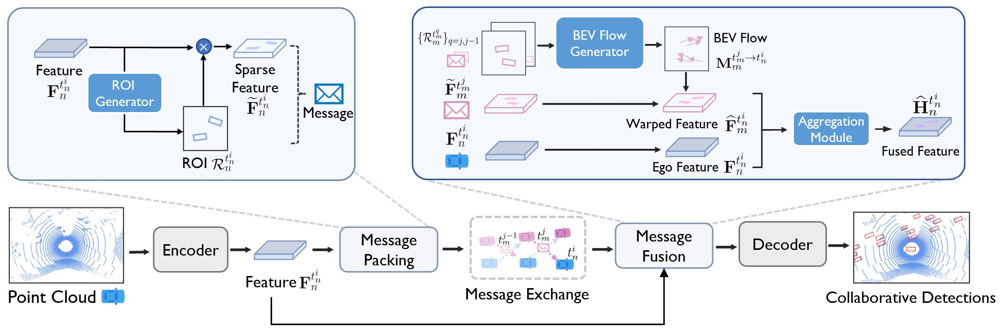
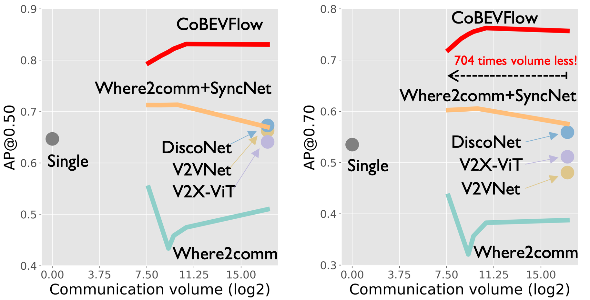
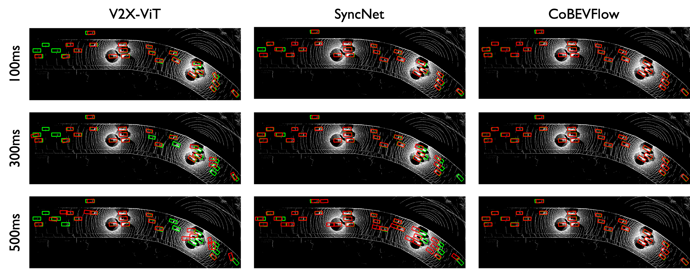
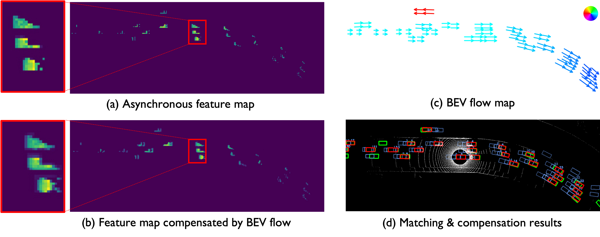

Asynchrony-Robust Collaborative Perception via Bird's Eye View Flow
Accepted by NeurIPS 2023
Abstract
By facilitating communication among multiple agents, collaborative perception can substantially boost each agent's perception ability. However, temporal asynchrony among agents is inevitable in real-world due to communication delays, interruptions, and clock misalignments. This issue causes information mismatch during multi-agent fusion, seriously shaking the foundation of collaboration. To address this issue, we propose CoBEVFlow, an asynchrony-robust collaborative 3D perception system based on bird's eye view (BEV) flow. The key intuition of CoBEVFlow is to compensate motions to align asynchronous collaboration messages sent by multiple agents. To model the motion in a scene, we propose BEV flow, which is a collection of the motion vector corresponding to each spatial location. Based on BEV flow, asynchronous perceptual features can be reassigned to appropriate positions, mitigating the impact of asynchrony. CoBEVFlow has two advantages: (i) CoBEVFlow can handle asynchronous collaboration messages sent at irregular, continuous time stamps without discretization; and (ii) with BEV flow, CoBEVFlow only transports the original perceptual features, instead of generating new perceptual features, avoiding additional noises. To validate CoBEVFlow's efficacy, we create IRregular V2V(IRV2V), the first synthetic collaborative perception dataset with various temporal asynchronies that simulate different real-world scenarios. Extensive experiments conducted on both IRV2V and the real-world dataset DAIR-V2X show that CoBEVFlow consistently outperforms other baselines and is robust in extremely asynchronous settings.
Architecture
The problem of asynchrony results in the misplacements of moving objects in the collaboration messages. That is, the collaboration messages from multiple agents would record various positions for the same moving object. The proposed CoBEVFlow addresses this issue with two key ideas: i) we use a BEV flow map to capture the motion in a scene, enabling motion-guided reassigning asynchronous perceptual features to appropriate positions; and ii) we generate the region of interest(ROI) to make sure that the reassignment only happens to the areas that potentially contain objects. By following these two ideas, we eliminate direct modification of the features and keep the background feature unaltered, effectively avoiding unnecessary noise in the learned features. Figure 1 is the overview of the CoBEVFlow. More tech details can be found in our paper.

Figure 1. Message packing process prepares ROI and sparse features as the message for efficient communication and BEV flow map generation. Message fusion process generates and applies BEV flow map for compensation, and fuses the features at the current timestamp from all agents.
Results
Benchmark Comparison
The baseline methods include late fusion, DiscoNet, V2VNet, V2X-ViT and Where2comm. The red dashed line represents single-agent detection without collaboration. We also consider the integration of SyncNet with Where2comm, which presents the SOTA method Where2comm with resistance to time delay. All methods use the same feature encoder based on PointPillars. To simulate temporal asynchrony, we sample the frame intervals of received messages with binomial distribution to get random irregular time intervals. Fig. 4 shows the detection performances (AP@IoU=0.50/0.70) of the proposed CoBEVFlow and the baseline methods under varying levels of temporal asynchrony on both IRV2V and DAIR-V2X, where the x-axis is the expectation of the time interval of delay of the latest received information and interval between adjacent frames and y-axis the detection performance. Note that, when the x-axis is at 0, it represents standard collaborative perception without any asynchrony. We see that i) the proposed CoBEVFlow achieves the best performance in both simulation and real-world datasets at all asynchronous settings. On the IRV2V dataset, CoBEVFlow outperforms the best methods by 23.3% and 35.3% in terms of AP@0.50 and AP@0.70, respectively, under a 300ms interval expectation. Similarly, under a 500ms interval expectation, we achieve 30.3% and 28.2% improvements, respectively. On DAIR-V2X dataset, CoBEVFlow still performs best. ii) CoBEVFlow demonstrates remarkable robustness to asynchrony. As shown by the red line in the graph, CoBEVFlow exhibits a decrease of only 4.94% and 14.0% in AP@0.50 and AP@0.70, respectively, on the IRV2V dataset under different asynchrony. These results far exceed the performance of single-object detection, even under extreme asynchrony.

Figure 2. Comparison of the performance of CoBEVFlow and other baseline methods under the expectation of time interval from 0 to 500ms. CoBEVFlow outperforms all the baseline methods and shows great robustness under any level of asynchrony on both two datasets.
Communication Cost
CoBEVFlow allows agents to share only sparse perceptual features and the ROI set, which is communication bandwidth friendly. Figure 3 compares the proposed CoBEVFlow with the previous methods in terms of the trade-off between detection performance (AP@0.50/0.70) and communication bandwidth under asynchrony. We adopt the same asynchrony settings mentioned before and choose 300ms as the expectation of the time interval. We see: i) CoBEVFlow consistently outperforms the state-of-the-art communication efficient solution, where2comm, as well as the other baselines in the setting of asynchrony; ii) as the communication volume increases, the performance of CoBEVFlow continues to improve steadily, while the performance of where2comm and where2comm+SyncNet fluctuates due to improper information transformation caused by asynchrony.

Figure 3. Trade-off between detection performance (AP@0.50/0.70) and communication bandwidth under asynchrony (expected 300ms latency) on IRV2V dataset. CoBEVFlow outperforms even with a much smaller communication volume.
Visualization on IRV2V and DAIR-V2X Dataset
We illustrate the detection results of V2X-ViT, SyncNet, and CoBEVFlow at three asynchrony levels on the IRV2V dataset in Figure 4 and the DAIR-V2X dataset in Figure 5. The expectations of time intervals are 100, 300, 500ms. The red box represents the detection result and the green box represents the ground-truth. V2X-ViT shows significant deviations in collaborative perception under asynchrony, while SyncNet shows poor compensation due to introducing noise in feature regeneration and irregularity-incompatible design. The third row shows the results of CoBEVFlow, which achieve precise compensation and outstanding detections.

Figure 4. Visualization of detection results for V2X-ViT, SyncNet, and CoBEVFlow with the expectation of time intervals are 100, 300, and 500ms on IRV2V dataset. CoBEVFlow qualitatively outperforms the others under different asynchrony. Red and green boxes denote detection results and ground-truth respectively.

Figure 5. Visualization of detection results for Where2comm, V2X-ViT, SyncNet, and CoBEVFlow with the expectation of time intervals are 100, 300, and 500ms on DAIR-V2X dataset. CoBEVFlow qualitatively outperforms the others under different asynchrony. Red and green boxes denote detection results and ground-truth respectively.
Visualization of BEV flow map
Figure 6 visualizes the feature map before/after compensation of CoBEVFlow in Plot(a)(b), the corresponding flow map in Plot(c), and matching, detection results after compensation in Plot(d). The green boxes in Plot (d) are the ground truth, the blue boxes are the historical detections with the matched asynchronous ROIs and the red boxes are the compensated detections. We see that the BEV flow map can be precisely estimated and is beneficial for perceptual feature alignment. The compensated detection results are more accurate than the uncompensated ones.

Figure 6. Visualization of compensation with CoBEVFlow on IRV2V dataset. In subfigure(d), green boxes are the objects' ground truth locations, blue boxes are the detection results based on the historical asynchronous features and red boxes are the detection results after compensation. CoBEVFlow achieves precise matching and compensation with the BEV flow map and mitigates the negative impact of asynchrony to a great extent.
Conclusion
We formulate the asynchrony collaborative perception task, which considers various unideal factors that may cause communication latency or information misalignments during collaborative communication. We further propose CoBEVFlow, a novel asynchrony-robust collaborative perception framework. The core idea of CoBEVFlow is BEV flow, which is a collection of the motion vector corresponding to each spatial location. Based on BEV flow, asynchronous perceptual features can be reassigned to appropriate positions, mitigating the impact of asynchrony. Comprehensive experiments show that CoBEVFlow achieves outstanding performance under all settings and far superior robustness with asynchrony.